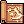
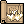

Super Novice
| |||||||||||||||||||
The Super Novice (SN) is the 2nd job class of Novice after achieving a Base Level of 45. Super Novices are the masters of everything and nothing. Seeing that they have decent selection of skills from other classes, they can be whatever they want being it a magic damage dealer, a physical damage dealer, a tank, or even a pure supporter.
Thanks to an update, they are now on the same field as other classes since after being Base Level 99 with Job Level 99 they can job change to Expanded Super Novice and reach a Base Level 200 with Job Level of 70.
Player Guides
Builds
Stats
| Stat | Notes |
|---|---|
| Strength | Increases your physical damage and the amount of items you can carry. Important stat for physical builds. Every 1 point;
|
| Agility | Increases your ASPD and flee. One of the most important stats after the damage ones are taken care since FLEE helps SN to survive and ASPD to attack fast.
Every 1 point;
Every 5 points;
|
| Vitality | Not an important stat. In most cases you will add enough points until you get 100 total VIT to prevent STUN because the base HP value is low.
Every 1 point;
Every 2 points;
Every 5 points;
|
| Intelligence | Increases MATK and helps with the cast time. Important stat for magical/support builds.
Every 1 point;
|
| Dexterity | Helps with the cast time. Important stat for magical/support builds.
Every 1 point;
Every 5 points;
|
| Luck | Helps with CRIT, adds a small portion of ATK/MATK, and prevents some status. Not a super important stat outside of physical crit builds but players may find it useful to push to 100 total since it prevents chaos and curse. Every 1 point;
Every 3 points;
Every 5 points;
Every 10 points;
|
Skills
Super Novice players can spend their points wherever they want. The limitations to force a player to spend their first class points in the first skill tree doesn't exist in this class.
Super Novice


Expanded Super Novice
| Expanded Super Novice Skill Tree | ||||||
|---|---|---|---|---|---|---|
| Iron Hand | Faith | Holy Cross | Impositio Manus | Tunnel Drive | Snatcher | Enchant Poison |

|

|

|

|

|

|

|
| 10 | 10 | 10 | 5 | 5 | 10 | 10
|
| Call Spirits | Auto Guard | Sanctuary | Status Recovery | Back Stab | Steal Coin | Poison React |

|

|

|

|

|

|

|
| 5 | 10 | 10 | 1 | 5 | 10 | 10
|
| Absorb Spirits | Shield Charge | Gloria | Aspersio | Raid | Magic Crasher | Venom Dust |
|
|

|

|

|

|

|

|
| 1 | 10 | 5 | 5 | 5 | 1 | 10
|
| Critical Explosion | Shield Boomerang | Magnificat | Venom Splasher | |||

|

|

|
||||
| 5 | 5 | 5 | 10
| |||
| Dangerous Soul Collect | Water Ball | Jupitel Thunder | Earth Spike | Sightrasher | Skid Trap | Axe Mastery |

|

|

|

|
 | 
|
|
| 1 | 5 | 5 | 5 | 10 | 5 | 10
|
| Ice Wall | Lord of Vermillion | Heaven's Drive | Fire Pillar | Land Mine | Hit Binding | |

|

|
 | 
|

|

| |
| 10 | 10 | 5 | 10 | 5 | 1
| |
| Frost Nova | Storm Gust | Quagmire | Meteor Storm | Beast Bane | Weaponry Research | |

|

|

|

|

| ||
| 10 | 10 | 5 | 10 | 10 | 10
| |
| Sense | Repair | |||||

|

| |||||
| 1 | 1
| |||||
| Breakthrough | Help Me Angel! | Transcendence | ||||

|
||||||
| 5 | 1 | 5 | ||||
Secrets
Super Novice is a class deemed weak by many. Guardian Angels, seeing that happening to their favorite class, decided to give them some hidden powers.
Faster SP Regen
Thanks to /doridori, a Super Novice can increase the SP regenerated through  Increase SP Recovery. You need to do this at least twice per second for 6 times.
Increase SP Recovery. You need to do this at least twice per second for 6 times.
Guardian Angel Upgraded
Since Angels are biased and love Super Novices above all other classes, they get more buffs than any other class when they've level up. Whenever you level up, Guardian Angel will cast on your Super Novice the following buffs:


Never Give Up!
Super Novices are classes that defy everything, even death! So, whenever your experience values are between 99.0% and 99.9%, if you were going to die, instead you will refill your HP and SP and activate  Steel Body because you fear nothing!
Steel Body because you fear nothing!
- Note #1: This changes to a permanent bonus after achieving max level.
- Note #2: Only works once per log in. This means that if you want to use it again, you've to relog.
Undying Love
If one Super Novice finds the love of their life, his/her partner will provide +1 to ALL STATS whenever the skill  I'll sacrifice myself for you is used.
I'll sacrifice myself for you is used.
The Power of Love
A Super Novice will heal his/her partner for twice the normal amount.
Really Super
If a Super Novice can avoid any death until Job 70 and onwards, he will activate a bonus of +10 ALL STATS. If a Super Novice dies after that, the bonus is lost.
- Note: While on officials you can recover this bonus through the spam of
 Supernovice Spirit, here, on NovaRO, this bonus can also be recovered by simply talking to any Healer NPC.
Supernovice Spirit, here, on NovaRO, this bonus can also be recovered by simply talking to any Healer NPC.
Super Cart
Super Novice has a access to an unique cart different from the merchant class. To get it, simply talk to any Universal Rental NPC.
Fury
Whenever a Super Novice reaches a multiple of 10.0% experience, his special fury senses activate and he can summon his/her Guardian Angel for an extra +50 CRIT!
To summon it, all you've to do is to type one of the following chants, one sentence at a time:
Chant #1 Chant #2 - Dear angel, can you hear my voice?
- I am
name of your characterSuperNovice~ - Help me out~ Please~ T_T
Add anything here
- Guardian Angel, can you hear my voice? ^^;
- My name is
name of your character, and I'm a Super Novice~ - Please help me~ T.T
Add anything here
Equipment
Headgears
Upper
Item Way to Obtain Notes
Middle
Item Way to Obtain Notes
Lower
Item Way to Obtain Notes
Armor
Item Way to Obtain Notes
Weapons
Daggers
Item Way to Obtain Notes
One-Handed Sword
Item Way to Obtain Notes
One-Handed Axe
Item Way to Obtain Notes
Mace
Item Way to Obtain Notes
One-Handed Rod
Item Way to Obtain Notes
Shields
Item Way to Obtain Notes
Garment
Item Way to Obtain Notes
Footgear
Item Way to Obtain Notes
Accessories
Item Way to Obtain Notes
Cards
Headgears
Item Way to Obtain Notes
Armor
Item Way to Obtain Notes
Weapons
Item Way to Obtain Notes
Shields
Item Way to Obtain Notes
Garment
Item Way to Obtain Notes
Footgear
Item Way to Obtain Notes
Accessories
Item Way to Obtain Notes
Attack Speed Modifiers
| Base | 156 Aspd | ||||||||
 Shield Shield |
-10 | ||||||||
 Dagger Dagger |
-15 | ||||||||
 1h Sword 1h Sword |
-17 | ||||||||
 1h Axe 1h Axe |
-10 | ||||||||
 Mace Mace |
-10 | ||||||||
 1h Staff 1h Staff |
-25 | ||||||||